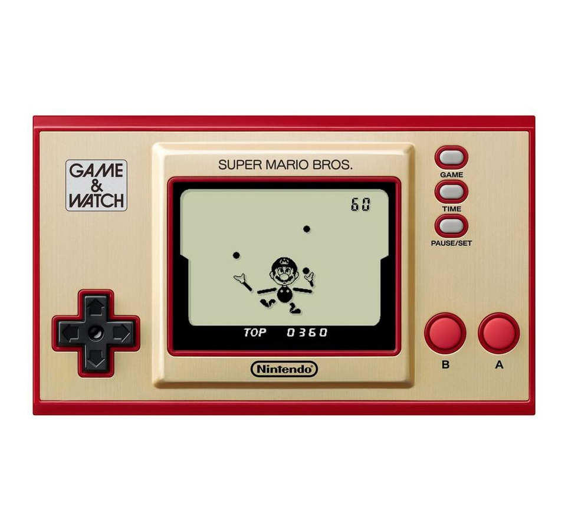

Game & Watch
Game & Watch is a line of handheld electronic games developed by Nintendo and first released in 1980. Designed by Gunpei Yokoi, each device features a simple LCD screen, a clock, and a single game. Compact and portable, Game & Watch titles include classics like Ball, Donkey Kong, and Mario Bros., laying the groundwork for Nintendo's future success in handheld gaming. Renowned for their innovative design and nostalgic appeal, these devices are celebrated as pioneers in gaming history.